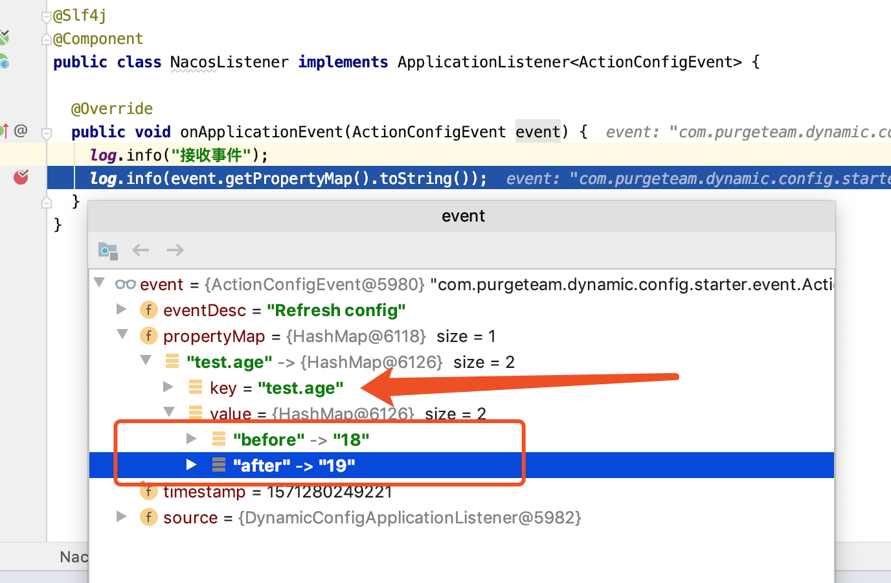

qq交流群:
812321371
微信交流群:MercyYao
配置中心有原生的 SpringCloud Config 、国内开源的 阿里 Nacos、携程 Apollo 等。
都是配置热加载的基础上增加了其他的功能。
配置中心具有配置热加载，修改配置 -> 推送到程序 -> 执行配置更新。
而获取配置更新的具体内容，这些组件都没有做到(SpringCloud Config、Nacos, Apollo待验证 )。如:获取变化的配置 test 更新前为 123 ,更新后为 111。
SpringCloud Config 、Nacos 、 Apollo待验证 配置更新都是将整个配置文件推送给服务进行配置对比结果进行更新。这个阶段用户无法从程序中获取更新的内容。
为了实现这个扩展功能点,更新结果可以让程序感知。
在这个阶段用户通过code可以实现配置监听, 监听到某个配置变化做其他操作等。
示例: 获取到推送配置变化, 感知到 test 发生变化, 做更新同步数据操作等等。
感知结果集如:
{
`被更新的配置key`:{
before: `原来的值`，
after: `更新后的值`
},
`被更新的配置key`:{
before: `原来的值`，
after: `更新后的值`
}
}<dependency>
<groupId>com.purgeteam</groupId>
<artifactId>dynamic-config-spring-boot-starter</artifactId>
<version>0.1.0.RELEASE</version>
</dependency>当然实际情况要结合添加动态配置依赖包 SpringCloud Config 、 Nacos 、 Apollo 。
dynamic-config-spring-boot-starter 模块不包含以上依赖, 需要自行添加。
简介: 开启这个特性注解，具备配置推送更新监听能力。
启动类添加 @EnableDynamicConfigEvent 注解开启配置变化监听功能。
@EnableDynamicConfigEvent
@SpringBootApplication
public class DynamicConfigSpringBootApplication {
public static void main(String[] args) {
SpringApplication.run(DynamicConfigSpringBootApplication.class, args);
}
}创建 NacosListener(名称随意) 实现 ApplicationListener<ActionConfigEvent>#onApplicationEvent 方法
@Slf4j
@Component
public class NacosListener implements ApplicationListener<ActionConfigEvent> {
@Override
public void onApplicationEvent(ActionConfigEvent event) {
log.info("接收事件");
log.info(event.getPropertyMap().toString());
}
}在 NacosListener#onApplicationEvent 方法里获取目标值, 作相应的逻辑处理。
ActionConfigEvent event:
public class ActionConfigEvent extends ApplicationEvent {
// 事件说明
private String eventDesc;
// 更新变化结果集
private Map<String, HashMap> propertyMap;
...
}ActionConfigEvent 主要包含 Map<String, HashMap> propertyMap;, 从这里可以获取更新变化结果, propertyMap结构如下:
{
`被更新的配置key`:{
before: `原来的值`，
after: `更新后的值`
},
`被更新的配置key`:{
before: `原来的值`，
after: `更新后的值`
}
}ps: 示例为 Nacos 其它配置中心无差别。
原始配置:
test.age=18
user.name=purgeyao修改配置:
# test.age 将18更新为19
test.age=19
user.name=purgeyao在 NacosListener#onApplicationEvent 方法加入端点调试观察 ActionConfigEvent 对象参数。

更新的 test.age 已经被记录在了 ActionConfigEvent.propertyMap 里了, 从 18 更新为 19。
控制台打印:
2019-10-17 10:44:09.221 INFO 54054 --- [-10.1.1.97_8848] c.p.dynamic.config.demo.NacosListener : 接收事件
2019-10-17 10:45:19.752 INFO 54054 --- [-10.1.1.97_8848] c.p.dynamic.config.demo.NacosListener : {test.age={before=18, after=19}}上述功能基于 Nacos 、 SpringCloud Config 或基于 SpringCloud Config 之上构建的配置中心都可以使用, 其他配置中心待验证。
qq交流群:
812321371
微信交流群:MercyYao
示例代码地址:dynamic-config-spring-boot